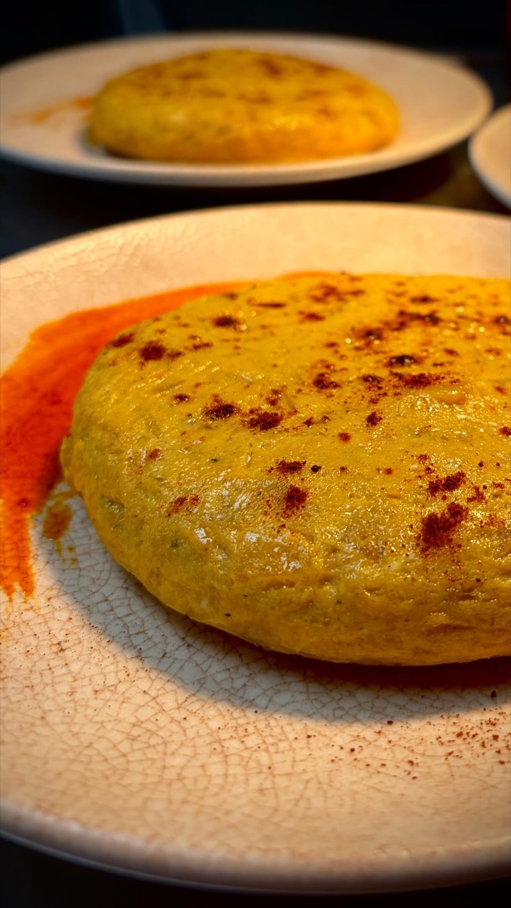
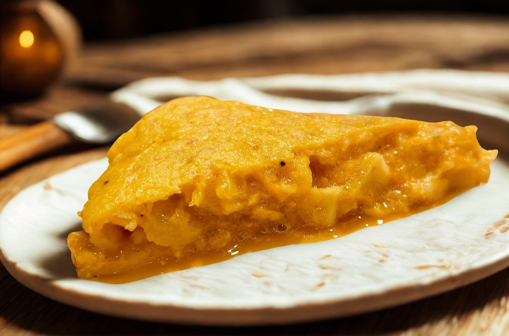

Tortilla con boina. Tortillería gourmet en Benimaclet, Valencia
Tortilla de patatas de huevos gallegos, hecha al momento, con la boina que quieras encima. Benimaclet, Valencia.
SubcampeonesTortilla de Patatas
Comunitat Valenciana 2026
Tortilla es casaEs compartirEs mamá llamando a comer

Se hace
al momento.
Huevos camperos gallegos que llegan cada semana. Patata pelada aquí y frita en dos tiempos. Cuajada justa: que tiemble, que no se rompa.
Y tú eliges cómo la quieres
- Sin cebolla
- Con cebolla
- Con cebolla caramelizada
Y encima, la boina
- Txistorra a la sidra con miel
- Carrillera desmechada
- Salsa trufada
- Bonito del norte
- All i pebre
- Parmigiana
Las melosas
con boina
Una tortilla clásica y las boinas que le van encima. Cada mes cae una boina nueva y una cheese nueva: pregunta cuál toca.
La carta,
sin rodeos.

Tortilla es casa.
Es compartir.
Es mamá llamando a comer.
Somos una pareja Santander–Valencia con una obsesión: que redescubras la tortilla. Nando Cerón lleva los fogones y la receta lleva morriña, olor a casa y el meneíto justo.
- 2026 Subcampeones del Campeonato de Tortilla de Patatas de la Comunitat Valenciana
- 2025 Finalistas del III Campeonato Internacional de Tortilla de Patatas
- 7,75 Nota en la guía Lo Mejor de la Gastronomía, que la define como jugosa, cremosa y melosa
- 4,9 Sobre 5 en Restaurant Guru
Ven,
que se enfría.
Reservar mesa
Benimaclet · 46010 Valencia Cómo llegar
- Lunes
- Cerrado
- Martes a viernes
- 18:00 – 23:00
- Sábado
- 12:00 – 23:00
- Domingo
- 12:00 – 16:00
También a domicilio en Glovo, Just Eat y Uber Eats.
635 279 766Llama o escribe por WhatsApp
@lamelosafood